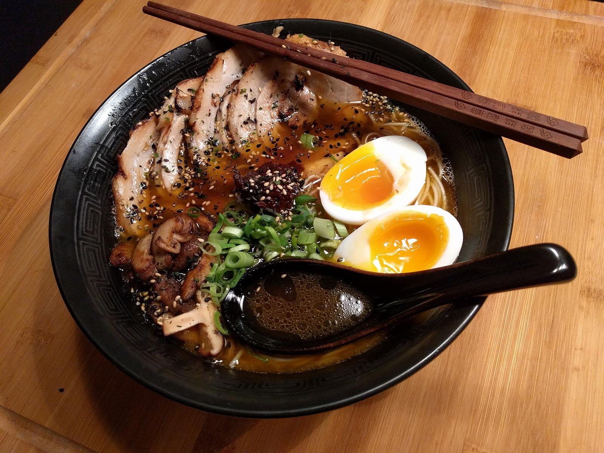

Home
Tonkotsu Ramen

Here we have some delicious Tonoktsu Ramen
This Tonkotsu Ramen recipe brings the rich, creamy flavors of authentic Japanese ramen right to your kitchen. Made with a deeply flavorful pork bone broth that simmers for hours to achieve its signature milky texture, this dish is the perfect balance of umami and comfort. Tender chashu pork, perfectly cooked ramen noodles, and a jammy soft-boiled egg come together in a bowl packed with bold, savory goodness. Finished with aromatic garlic oil, fresh green onions, and crisp nori, this restaurant-quality ramen is a must-try for any noodle lover. Follow this step-by-step guide to recreate this iconic dish at home!
Ingredients
Ingredients for Tonkotsu Ramen
For the Broth:
- 3 lbs (1.4 kg) pork bones (neck bones, trotters, or marrow bones)
- 1 lb (450g) pork back fat (optional, for extra richness)
- 1 onion, halved
- 1 head of garlic, halved
- 1 thumb-sized piece of ginger, sliced
- 2 leeks, white parts only, chopped
- 2 dried shiitake mushrooms (optional, for umami boost)
- 8 cups (2L) water, plus more as needed
- ¼ cup (60ml) soy sauce
- 2 tbsp mirin
- 1 tbsp salt
For the Chashu Pork:
- 1 lb (450g) pork belly, rolled and tied
- ½ cup (120ml) soy sauce
- ¼ cup (60ml) mirin
- ¼ cup (60ml) sake
- 2 tbsp sugar
- 1 clove garlic, crushed
- 1 inch (2.5cm) piece of ginger, sliced
For the Ramen Tare (Seasoning Sauce):
¼ cup (60ml) soy sauce
2 tbsp mirin
1 tbsp sake
1 tsp sugar
For the Garlic Oil (Mayu):
- ¼ cup (60ml) vegetable oil
- 5 cloves garlic, minced
For Assembling the Ramen:
- 4 servings fresh ramen noodles
- 2 soft-boiled eggs, halved
- Green onions, thinly sliced
- Nori (seaweed sheets)
- Bamboo shoots (menma), optional
- Toasted sesame seeds, optional
Instructions
Step 1: Prepare the Pork Bone Broth
- Blanch the Bones: Place the pork bones in a large pot, cover with water, and bring to a boil for 10 minutes. This helps remove impurities. Drain and rinse the bones under cold water.
- Simmer the Broth: Return the cleaned bones to the pot and add 8 cups (2L) of fresh water. Add the onion, garlic, ginger, leeks, and shiitake mushrooms. Simmer uncovered on low heat for 10-12 hours, adding more water as needed to keep the bones submerged. The broth should become thick and milky.
- Strain the Broth: Remove the bones and strain the broth through a fine mesh sieve. Discard the solids. Stir in soy sauce, mirin, and salt to taste. Keep warm.
Step 2: Make the Chashu Pork
- Prepare the Marinade: In a small pot, combine soy sauce, mirin, sake, sugar, garlic, and ginger. Bring to a gentle simmer.
- Cook the Pork: Add the rolled pork belly to the pot and cook over low heat, turning occasionally, for about 1.5 hours.
- Cool & Slice: Let the pork cool in the marinade, then slice into thin rounds before serving.
Step 3: Make the Garlic Oil (Mayu)
- Heat vegetable oil in a small pan over medium-low heat.
- Add minced garlic and stir constantly until the garlic turns dark brown (but not burnt).
- Strain the oil and set aside for drizzling on the ramen.
Step 4: Prepare the Soft-Boiled Eggs
- Bring a pot of water to a gentle boil and add the eggs. Boil for 6.5 minutes for a soft, jammy yolk.
- Transfer the eggs to an ice bath for 5 minutes. Peel and slice in half before serving.
Step 5: Cook the Ramen Noodles
- Boil a pot of water and cook the fresh ramen noodles according to the package instructions (usually 2-3 minutes).
- Drain and rinse lightly with warm water to remove excess starch.
Step 6: Assemble the Ramen Bowls
- In each bowl, add 1-2 tablespoons of ramen tare (seasoning sauce).
- Ladle the hot tonkotsu broth into the bowl, stirring to mix with the tare.
- Add the cooked ramen noodles, arranging them neatly in the broth.
- Top with slices of chashu pork, a soft-boiled egg, green onions, nori, and bamboo shoots if using.
- Drizzle with garlic oil for extra depth of flavor.
Step 7: Serve & Enjoy!
- Serve immediately while hot, and enjoy this homemade Tonkotsu Ramen with a side of gyoza or Japanese pickles for the full experience!